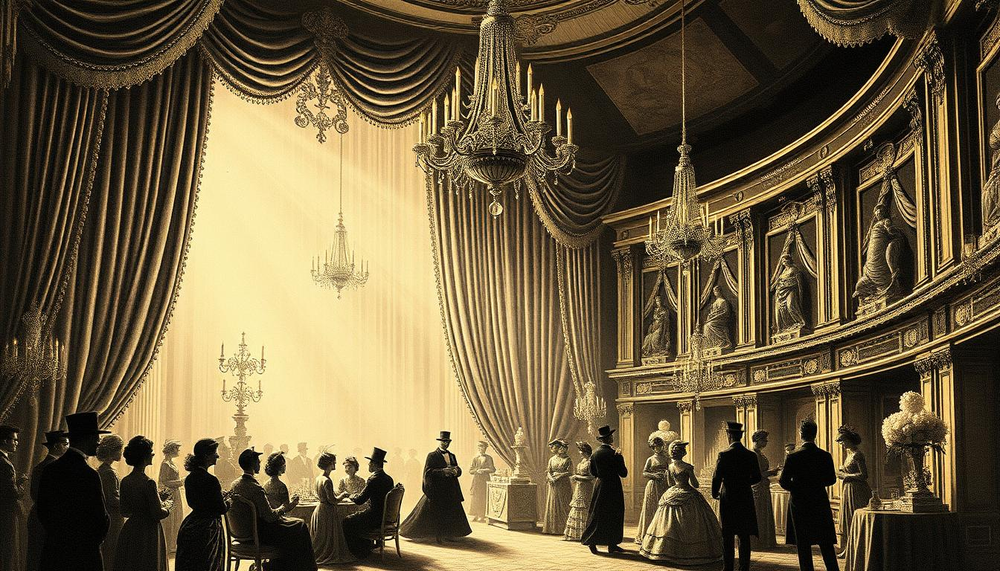

Le Conseil des Beaux-Arts se Réunit en Session Extraordinaire
El Consejo de las Bellas Artes se Reúne en Sesión Extraordinaria
Les tensions entre les guildes atteignent un point critique après les événements mystérieux de janvier
Las tensiones entre los gremios alcanzan un punto crítico tras los misteriosos acontecimientos de enero

Paris, 18 Mars — Dans une décision sans précédent, le Conseil des Beaux-Arts a convoqué une session extraordinaire hier soir au Palais Garnier. Les tensions qui couvent depuis la tragédie de janvier dernier ont atteint un point où même les plus optimistes parmi les membres du Conseil reconnaissent qu'une action immédiate est nécessaire.
Selon nos sources proches du Conseil, la réunion s'est tenue dans une atmosphère tendue, avec Aline Dessendre, la dirigeante de la Guilde des Peintres, affichant une froideur inhabituelle. Les débats auraient porté sur les mesures de sécurité à mettre en place pour éviter que de tels incidents ne se reproduisent.
La Guilde des Écrivains, représentée par Marcel Proust, aurait proposé une enquête approfondie, suggérant que certains membres pourraient avoir des informations qu'ils n'ont pas encore partagées. Cette proposition a été accueillie avec scepticisme par plusieurs membres, qui y voient une tentative de déstabilisation politique.
Les observateurs politiques notent que cette session pourrait marquer un tournant dans l'équilibre des pouvoirs au sein du Conseil, qui a maintenu une paix relative depuis plus d'un siècle.
París, 18 de Marzo — En una decisión sin precedentes, el Consejo de las Bellas Artes convocó una sesión extraordinaria anoche en el Palacio Garnier. Las tensiones que hierven desde la tragedia de enero pasado han alcanzado un punto en el que incluso los más optimistas entre los miembros del Consejo reconocen que se necesita una acción inmediata.
Según nuestras fuentes cercanas al Consejo, la reunión se celebró en una atmósfera tensa, con Aline Dessendre, la líder del Gremio de Pintores, mostrando una frialdad inusual. Los debates habrían versado sobre las medidas de seguridad a implementar para evitar que tales incidentes se repitan.
El Gremio de Escritores, representado por Marcel Proust, habría propuesto una investigación exhaustiva, sugiriendo que algunos miembros podrían tener información que aún no han compartido. Esta propuesta fue recibida con escepticismo por varios miembros, que ven en ella un intento de desestabilización política.
Los observadores políticos señalan que esta sesión podría marcar un punto de inflexión en el equilibrio de poderes dentro del Consejo, que ha mantenido una paz relativa durante más de un siglo.
Le Salon d'Automne Présente les Œuvres Controversées des Fauvistes
El Salón de Otoño Presenta las Obras Controvertidas de los Fauvistas
Le Salon d'Automne, qui a ouvert ses portes cette semaine au Grand Palais, présente une collection d'œuvres qui ont déjà suscité l'indignation des critiques traditionalistes. Les peintures de Henri Matisse et de son groupe, baptisés "les Fauves" par un critique horrifié, utilisent des couleurs d'une intensité sans précédent. Les visiteurs rapportent des sensations inhabituelles en contemplant ces œuvres, certains parlant d'émotions viscérales qui persistent longtemps après avoir quitté le salon.
El Salón de Otoño, que abrió sus puertas esta semana en el Grand Palais, presenta una colección de obras que ya han suscitado la indignación de los críticos tradicionalistas. Las pinturas de Henri Matisse y su grupo, bautizados como "los Fauves" por un crítico horrorizado, utilizan colores de una intensidad sin precedentes. Los visitantes reportan sensaciones inusuales al contemplar estas obras, algunos hablan de emociones viscerales que persisten mucho tiempo después de abandonar el salón.
Les Architectes Maçons Dévoilent de Nouveaux Plans pour la Transformation de Montmartre
Los Arquitectos Masónicos Revelan Nuevos Planes para la Transformación de Montmartre
La Loge des Architectes a annoncé hier un projet ambitieux pour transformer le quartier de Montmartre. Hector Guimard, l'architecte responsable des entrées du Métropolitain, dirigera le projet qui promet d'intégrer l'esthétique Art Nouveau avec les besoins modernes de la ville. Cependant, des rumeurs persistent sur la nature exacte de ces "transformations", certains résidents rapportant des phénomènes étranges dans les bâtiments récemment rénovés.
La Logia de Arquitectos anunció ayer un proyecto ambicioso para transformar el barrio de Montmartre. Hector Guimard, el arquitecto responsable de las entradas del Metropolitano, dirigirá el proyecto que promete integrar la estética Art Nouveau con las necesidades modernas de la ciudad. Sin embargo, persisten rumores sobre la naturaleza exacta de estas "transformaciones", con algunos residentes reportando fenómenos extraños en los edificios recientemente renovados.
❦ ◆ ❦